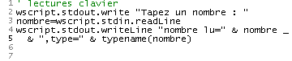
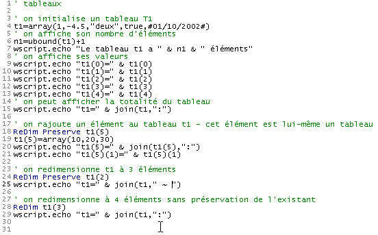
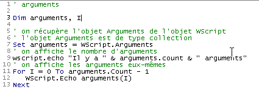

3. أساسيات البرمجة VBSCRIPT
بعد أن وصفنا سياقات التنفيذ الممكنة لبرنامج نصي vbscript، ننتقل الآن إلى اللغة نفسها. في ما يلي، سنفترض الشروط التالية:
- حاوية البرنامج النصي هي WSH
- يتم وضع البرنامج النصي في ملف بامتداد .vbs
لتقديم مفهوم ما، نتبع عادةً الطريقة التالية:
- نقدم المفهوم إذا لزم الأمر
- نقدم برنامجًا توضيحيًا مع نتائجه
- نعلق على النتائج والبرنامج إذا لزم الأمر
لا تهتم حاويات vbscript بـ«حالة الأحرف» (كبيرة/صغيرة) المستخدمة في نص البرنامج النصي. لذا يمكننا كتابة wscript.echo "coucou" أو WSCRIPT.ECHO "coucou" دون أي فرق.
تقوم البرامج المعروضة في ما يلي بعرض الكثير من النصوص على الشاشة، لذا سنعيد شرح طرق الكتابة الخاصة بكائن wscript.
3.1. عرض المعلومات
لقد استخدمنا بالفعل الطريقة echo الخاصة بالكائن wscript، لكن هذا الكائن يحتوي على طرق أخرى تسمح بالكتابة على الشاشة كما يوضح البرنامج النصي التالي:
البرنامج | النتائج |
 |
تجدر الإشارة إلى النقاط التالية:
- يُعتبر أي نص يوضع بعد علامة الفاصلة العليا تعليقًا على البرنامج النصي ولا يتم تفسيره بواسطة WSH (السطر 1).
- تقوم الدالة echo بكتابة معلماتها ثم تنتقل إلى السطر التالي، وكذلك الدالة writeLine (السطران 2 و6)
- تقوم الدالة write بكتابة معطياتها ولا تنتقل إلى السطر التالي (السطر 3)
- يتم تمثيل علامة نهاية السطر بسلسلة من حرفين من رموز ASCII، وهما 13 و10. وبالتالي، يُعبَّر عن السطر 4 بالتعبير chr(13) & chr(10)، حيث chr(i) هو الحرف ذو الرمز i، و& هو عامل ربط السلاسل. وبالتالي، فإن «chat» & «eau» تساوي السلسلة «chateau».
- يمكن تمثيل علامة نهاية السطر بسهولة أكبر بالثابت vbCRLF (السطر 5)
3.2. E كتابة التعليمات في نص VBScript
بشكل افتراضي، تُكتب كل تعليمة في سطر واحد. ومع ذلك، يمكن كتابة عدة تعليمة في سطر واحد بفصلها بحرف : كما في inst1:inst2:inst3. إذا كان السطر طويلاً جدًّا، يمكن تقسيمه إلى أجزاء. وفي هذه الحالة، يجب أن تنتهي الأجزاء المختلفة من الأمر بالحرفين (مسافة)_. لنستعرض المثال السابق مرة أخرى مع إعادة كتابة الأوامر بطريقة مختلفة:
البرنامج | النتائج |
 |
3.3. الكتابة باستخدام الدالة msgBox
على الرغم من أننا نستخدم في هذا المستند بشكل حصري تقريبًا الكائن wscript للكتابة على الشاشة، إلا أن هناك دالة أكثر تطورًا لعرض المعلومات في نافذة هذه المرة. وهي الدالة msgbox التي تُستخدم عادةً مع ثلاثة معلمات:
msgbox message، icônes+boutons، titre
- message هو نص الرسالة المراد عرضها
- icônes+boutons (اختياري) هو في الواقع رقم يشير إلى نوع الرمز والأزرار التي سيتم وضعها في نافذة الرسالة. غالبًا ما يكون هذا الرقم مجموع رقمين: الأول يحدد الرمز، والثاني يحدد الأزرار
- العنوان هو النص الذي سيتم وضعه في شريط عنوان نافذة الرسالة
القيم التي يجب استخدامها لتحديد الرمز والأزرار في نافذة العرض هي التالية:
الثابت | القيمة | الوصف |
vbOKOnly | 0 | يعرض الزر OK فقط. |
vbOKCancel | 1 | يعرض الزرين OK و«إلغاء». |
vbAbortRetryIgnore | 2 | يعرض الأزرار «إلغاء» و«إعادة المحاولة» و«تجاهل». |
vbYesNoCancel | 3 | يعرض أزرار «نعم» و«لا» و«إلغاء». |
vbYesNo | 4 | يعرض زري «نعم» و«لا». |
vbRetryCancel | 5 | يعرض زري «إعادة المحاولة» و«إلغاء». |
vbCritical | 16 | يعرض رمز «رسالة حرجة». |
vbQuestion | 32 | يعرض رمز «طلب تنبيه». |
vbExclamation | 48 | يعرض رمز «رسالة تحذير». |
vbInformation | 64 | يعرض رمز «رسالة إعلامية». |
vbDefaultButton1 | 0 | الزر الأول هو الزر الافتراضي. |
vbDefaultButton2 | 256 | الزر الثاني هو الزر الافتراضي. |
vbDefaultButton3 | 512 | الزر الثالث هو الزر الافتراضي. |
vbDefaultButton4 | 768 | الزر الرابع هو الزر الافتراضي. |
vbApplicationModal | 0 | تطبيق نمطي؛ يجب على المستخدم الرد على الرسالة قبل مواصلة العمل في التطبيق الحالي. |
vbSystemModal | 4096 | نظام نمطي؛ يتم تعليق جميع التطبيقات حتى يرد المستخدم على الرسالة. |
فيما يلي بعض الأمثلة:
البرنامج | ||||||||||||||||||||||||
 | ||||||||||||||||||||||||
النتائج | ||||||||||||||||||||||||
| ||||||||||||||||||||||||


في بعض الحالات، يتم عرض نافذة معلومات تكون في الوقت نفسه نافذة إدخال. إذا طُرح سؤال، فإننا نريد، على سبيل المثال، معرفة ما إذا كان المستخدم قد نقر على الزر oui أم على الزر non. تُرجع الدالة msgBox نتيجة لم نستخدمها في البرنامج السابق. هذه النتيجة هي عدد صحيح يمثل الزر الذي استخدمه المستخدم لإغلاق نافذة العرض:
الثابت | القيمة | الزر المختار |
vbOK | 1 | OK |
vbCancel | 2 | إلغاء |
vbAbort | 3 | التخلي |
vbRetry | 4 | إعادة المحاولة |
vbIgnore | 5 | تجاهل |
vbYes | 6 | نعم |
vbNo | 7 | لا |
يوضح البرنامج التالي كيفية استخدام نتيجة الدالة msgBox. تظهر نافذة 4 مرات تحتوي على أزرار «نعم» و«لا» و«إلغاء». يتم الرد بالطريقة التالية:
- يتم النقر على «نعم»
- النقر على «لا»
- النقر على «إلغاء»
- إغلاق النافذة دون استخدام أي زر. يوضح البرنامج أن ذلك يعادل استخدام زر «إلغاء».
البرنامج | ||||
 | ||||
النتائج | ||||
|


3.4. s البيانات القابلة للاستخدام في VBScript
لا يعرف VBscript سوى نوع واحد من البيانات: المتغير (variant). يمكن أن تكون قيمة المتغير عددًا (4، 10.2)، أو سلسلة أحرف ("مرحبًا")، أو قيمة منطقية (صحيح/خطأ)، أو تاريخًا (#01/01/2002#)، أو عنوان كائن، أو مجموعة من جميع هذه البيانات الموضوعة في بنية تُسمى مصفوفة.
دعونا نلقي نظرة على البرنامج التالي ونتائجه:
البرنامج | النتائج |
 |
تعليقات:
- تتطلب بعض لغات البرمجة (C، C++، باسكال، جافا، C#، ...) الإعلان المسبق عن المتغير قبل استخدامه. ويتمثل هذا الإعلان في تحديد اسم المتغير ونوع البيانات التي يمكن أن يحتوي عليها (عدد صحيح، عدد حقيقي، سلسلة، تاريخ، قيمة منطقية، ...). ويتيح الإعلان عن المتغيرات عدة أمور:
- معرفة المساحة المطلوبة للمتغير في الذاكرة، خاصةً إذا كانت أنواع البيانات المختلفة تتطلب مساحات مختلفة من الذاكرة
- التحقق من اتساق البرنامج. فعلى سبيل المثال، إذا كان i عددًا صحيحًا وc سلسلة أحرف، فإن ضرب i في c لا معنى له. وإذا كان المبرمج قد أعلن عن نوع المتغيرين i و c، فيمكن للبرنامج المسؤول عن تحليل البرنامج قبل تنفيذه أن يشير إلى مثل هذا التناقض.
وكما هو الحال في معظم لغات البرمجة النصية ذات النوع الواحد للبيانات (Perl، Python، Javascript، ...)، تسمح Vbscript بعدم إعلان المتغيرات. وهذا ما تم في المثال أعلاه.
- نلاحظ صيغة البيانات المختلفة
- 10.2 في السطر 10 (علامة عشرية وليس فاصلة). تجدر الإشارة إلى أن الرقم 10,2 هو الذي يظهر على الشاشة.
- 1.4e-2 في السطر 13 (الصيغة العلمية). على الشاشة، تم عرض الرقم 0,014
- [#01/10/2002#] (السطر 26) لتمثيل تاريخ 10 يناير 2002. وبالتالي، فإن تنسيق #mm/jj/aaaa# هو الذي يستخدمه VBScript لتمثيل التاريخ jj من الشهر mm من السنة aaaa
- القيم المنطقية true و false (صحيح/خطأ) في السطرين 31 و 34. يتم تمثيل هاتين القيمتين على التوالي بالأعداد الصحيحة -1 و 0 كما يظهر في عرض السطرين 32 و 35. عندما يتم ربط قيمة منطقية بسلسلة أحرف، تصبح هاتان القيمتان على التوالي السلسلتين "Vrai" و"Faux" كما يظهر في السطرين 33 و36. وتجدر الإشارة هنا إلى أن عامل الربط & يمكن استخدامه لربط عناصر أخرى غير السلاسل.
- وبما أن المتغير v ليس له نوع محدد، فيمكنه استيعاب قيم من أنواع مختلفة بالتتابع الزمني.
3.5. L : الأنواع الفرعية لنوع «variant»
فيما يلي ما تقوله الوثائق الرسمية حول أنواع البيانات المختلفة التي يمكن أن يحتوي عليها المتغير:
بالإضافة إلى التمييز البسيط بين الأرقام والسلاسل، يمكن لـ Variant التمييز بين أنواع مختلفة من المعلومات الرقمية. على سبيل المثال، تمثل بعض المعلومات الرقمية تاريخًا أو وقتًا. وعند استخدام هذه المعلومات مع بيانات أخرى تتعلق بالتاريخ أو الوقت، يتم التعبير عن النتيجة دائمًا في شكل تاريخ أو وقت. كما تتوفر أنواع أخرى من المعلومات الرقمية، بدءًا من القيم المنطقية وصولًا إلى الأعداد الكبيرة ذات العلامة العائمة. هذه الفئات المختلفة من المعلومات التي يمكن أن يحتوي عليها «Variant» تُعرف بأنواع فرعية. في معظم الحالات، ما عليك سوى وضع بياناتك في «Variant» ليتصرف هذا الأخير بالطريقة الأنسب وفقًا لهذه البيانات.
يعرض الجدول التالي الأنواع الفرعية المختلفة التي يمكن أن يحتوي عليها متغير (Variant).
النوع الفرعي | الوصف |
Empty | لم يتم تهيئة المتغير. وتكون قيمته صفرًا للمتغيرات الرقمية، وسلسلة ذات طول صفر ("") للمتغيرات النصية. |
Null | يحتوي المتغير (Variant) عمدًا على بيانات غير صحيحة. |
Boolean | |
بايت | يحتوي على عدد صحيح يتراوح بين 0 و 255. |
Integer | يحتوي على عدد صحيح يتراوح بين -32768 و32767. |
Currency | من -922 337 203 685 477,5808 إلى 922 337 203 685 477,5807. |
Long | يحتوي على عدد صحيح يتراوح بين -2 147 483 648 و 2 147 483 647. |
Single | يحتوي على عدد عائم بدقة بسيطة يتراوح من -3,402823E38 إلى -1,401298E-45 للقيم السالبة؛ ومن 1,401298E-45 إلى 3,402823E38 للقيم الموجبة. |
Double | يحتوي على عدد عائم بدقة مزدوجة من -1,79769313486232E308 إلى -4,94065645841247E-324 للقيم السالبة؛ من 4,94065645841247E-324 إلى 1,79769313486232E308 للقيم الموجبة. |
التاريخ (الوقت) | يحتوي على رقم يمثل تاريخًا بين 1 يناير 100 و31 ديسمبر 9999. |
سلسلة | يحتوي على سلسلة ذات طول متغير يقتصر على حوالي 2 مليار حرف. |
كائن | يحتوي على كائن. |
Error | يحتوي على رقم خطأ. |
3.6. C معرفة النوع الدقيق للبيانات الموجودة في متغير
يمكن أن تحتوي المتغيرات من نوع المتغير (variant) على بيانات من أنواع مختلفة. ونحتاج أحيانًا إلى معرفة الطبيعة الدقيقة لهذه البيانات. إذا كتبنا في أحد البرامج produit=nombre1*nombre2، فإننا نفترض أن nombre1 و nombre2 هما قيمتان رقميتان. لكننا قد لا نكون متأكدين في بعض الأحيان، لأن هذه القيم قد تكون ناتجة عن إدخال عبر لوحة المفاتيح، أو من ملف، أو من أي مصدر خارجي آخر. لذا يتعين علينا التحقق من طبيعة البيانات الموجودة في nombre1 و nombre2. تتيح لنا الدالة typename(var) معرفة نوع البيانات الموجودة في المتغير var. وفيما يلي بعض الأمثلة:
البرنامج | النتائج |
 |
وظيفة أخرى ممكنة هي vartype(var) التي تُرجع رقماً يمثل نوع البيانات الموجودة في المتغير var:
ثابت | القيمة | الوصف |
vbEmpty | 0 | فارغ (غير مُهيأ) |
vbNull | 1 | Null (لا توجد بيانات صالحة) |
vbInteger | 2 | عدد صحيح |
vbLong | 3 | عدد صحيح طويل |
vbSingle | 4 | عدد عائم بدقة بسيطة |
vbDouble | 5 | عدد عائم بدقة مزدوجة |
vbCurrency | 6 | عملة |
vbDate | 7 | التاريخ |
vbString | 8 | السلسلة |
vbObject | 9 | موضوع الأتمتة |
vbError | 10 | خطأ |
vbBoolean | 11 | منطقية |
vbVariant | 12 | متغير (يُستخدم فقط مع مصفوفات المتغيرات) |
vbDataObject | 13 | كائن غير تابع لـ Automation |
vbByte | 17 | بايت |
vbArray | 8192 | جدول |
ملاحظة: يتم تحديد هذه الثوابت بواسطة VBScript. وبالتالي، يمكن استخدام الأسماء في أي مكان في الكود بدلاً من القيم الفعلية.
المعلومات الواردة أعلاه مأخوذة من وثائق VBscript. وقد تكون هذه المعلومات غير صحيحة في بعض الأحيان، ويرجع ذلك على الأرجح إلى عمليات النسخ واللصق التي تمت من وثائق VB. لا تؤدي الدالة vartype التابعة لـ VBScript سوى جزء مما تم ذكره أعلاه.
البرنامج السابق، الذي أعيدت كتابته لـ vartype، يعطي النتائج التالية:
البرنامج | النتائج |
 |
3.7. D إعلان المتغيرات المستخدمة في البرنامج النصي
لقد أشرنا إلى أنه ليس من الضروري إعلان المتغيرات المستخدمة في البرنامج النصي. في هذه الحالة، إذا كتبنا:
1) somme=4
...
2) somme=smme+10
مع وجود خطأ مطبعي smme بدلاً من somme في الأمر 2، فلن يشير vbscript إلى أي خطأ. سيفترض أن smme متغير جديد. سيقوم بإنشائه وسيستخدمه في سياق الأمر 2 بتعيينه إلى 0.
قد يكون من الصعب جدًا اكتشاف هذا النوع من الأخطاء. لذا يُنصح بفرض إعلان المتغيرات باستخدام التوجيه option explicit في بداية البرنامج النصي. بعد ذلك، يجب إعلان كل متغير باستخدام الأمر dim قبل استخدامه لأول مرة:
option explicit
...
dim somme
1) somme=4
...
2) somme=smme+10
في هذا المثال، سيشير vbscript إلى وجود متغير غير مُعلن smme في 2) كما يوضح المثال التالي:
البرنامج | النتائج |
 |
على الرغم من أن المتغيرات لم تُعلن في معظم الأحيان في الأمثلة القصيرة الواردة في هذا المستند، فإننا سنفرض إعلانها بمجرد أن نبدأ في كتابة البرامج النصية الأولى ذات الأهمية. وعندئذٍ سيتم استخدام التوجيه Option explicit بشكل منهجي.
3.8. وظائف التحويل في لغة « »
يقوم VBScript بتحويل بيانات المتغيرات إلى سلاسل أحرف، وأرقام، وقيم منطقية، ... وفقًا للسياق. في معظم الأحيان، يعمل هذا بشكل جيد، لكنه قد يؤدي أحيانًا إلى بعض المفاجآت كما سنرى لاحقًا. وقد نرغب عندئذٍ في «فرض» نوع بيانات المتغير. يحتوي VBscript على وظائف تحويل تعمل على تحويل تعبير ما إلى أنواع مختلفة من البيانات. وفيما يلي بعض منها:
Cint (التعبير) | يحول التعبير إلى عدد صحيح قصير (integer) |
Clng (التعبير) | يحول التعبير إلى عدد صحيح طويل (long) |
Cdbl (التعبير) | يحول التعبير إلى عدد حقيقي مزدوج (double) |
Csng (التعبير) | يحول التعبير إلى عدد حقيقي أحادي (single) |
Ccur (التعبير) | يحول التعبير إلى قيمة نقدية (currency) |
فيما يلي بعض الأمثلة:
البرنامج |
 |
النتائج |
|
3.9. L ire البيانات المكتوبة على لوحة المفاتيح
يتيح الكائن wscript لبرنامج نصي استرداد البيانات التي تم إدخالها عبر لوحة المفاتيح. تتيح الطريقة wscript.stdin.readLine قراءة سطر نصي تم إدخاله عبر لوحة المفاتيح وتم تأكيده بواسطة مفتاح "Enter". يمكن تعيين هذا السطر الذي تمت قراءته إلى متغير.
البرنامج | النتائج |
 | |
تعليقات:
- في عمود النتائج وفي السطر [Tapez votre nom : st] ، st هو السطر الذي أدخله المستخدم.
وإذا كان النص الذي تم إدخاله عبر لوحة المفاتيح يمثل رقمًا، فإنه يُعتبر في المقام الأول سلسلة أحرف، كما يوضح المثال أدناه:
البرنامج | النتائج |
 |
إذا دخل هذا الرقم في عملية حسابية، فسيقوم VBscript تلقائيًا بتحويل السلسلة إلى رقم، ولكن ليس دائمًا. لنلقِ نظرة على المثال التالي:
البرنامج | النتائج |
 |
في النتائج، نلاحظ أن السطر 8 من البرنامج النصي لم يسير كما هو متوقع، وذلك لأن (للأسف) في لغة VBScript، للمُشغِّل + معنيان: جمع رقمين أو ربط سلسلتين (يتم لصق السلسلتين معًا). لقد رأينا سابقًا أن الأرقام التي يتم إدخالها عبر لوحة المفاتيح تُقرأ على أنها سلاسل أحرف، وأن لغة VBScript تقوم بتحويلها إلى أرقام حسب الحاجة. وقد قامت بذلك بشكل صحيح بالنسبة للعمليات الحسابية -، *، / التي لا يمكن أن تتضمن سوى أرقام، ولكنها لم تفعل ذلك بالنسبة لعلامة + التي يمكن أن تتضمن سلاسل أحرف أيضًا. وقد افترض هنا أننا نريد إجراء عملية ربط سلاسل.
يتمثل الحل البسيط لهذه المشكلة في تحويل السلاسل إلى أرقام فور قراءتها، كما يوضح التحسين التالي للبرنامج السابق:
البرنامج | النتائج |
 |
3.10. S إدخال البيانات باستخدام الدالة inputbox
قد نرغب في إدخال البيانات عبر واجهة رسومية بدلاً من لوحة المفاتيح. في هذه الحالة، نستخدم الدالة inputBox. تتقبل هذه الدالة العديد من المعلمات، لكن لا يُستخدم منها سوى أول اثنين بشكل متكرر:
reponse=inputBox(message,titre)
- message: السؤال الذي تطرحه على المستخدم
- العنوان (اختياري): العنوان الذي تضعه لنافذة الإدخال
- reponse: النص الذي يكتبه المستخدم. إذا أغلق المستخدم النافذة دون الإجابة، تكون reponse سلسلة فارغة.
فيما يلي مثال يُطلب فيه اسم وعمر شخص ما. بالنسبة للاسم، نقدم معلومة ونستخدم OK. أما بالنسبة للعمر، فنقدم معلومة أيضًا ولكننا نستخدم «إلغاء».
البرنامج | ||||
 | ||||
النتائج | ||||
|


3.11. U استخدام الكائنات المنظمة
يمكن إنشاء كائنات تحتوي على طرق وخصائص باستخدام VBScript. ولتجنب تعقيد الأمور، سنقدم هنا كائنًا يحتوي على خصائص دون طرق. لنفترض أن هناك شخصًا. له العديد من الخصائص التي تميزه: الطول، والوزن، ولون البشرة، ولون العينين، ولون الشعر، ... وسنكتفي بذكر اثنتين منها فقط: اسمه وعمره. قبل أن نتمكن من استخدام الكائنات، يجب إنشاء القالب الذي سيسمح بإنشائها. ويتم ذلك في لغة VBScript باستخدام فئة. يمكن تعريف الفئة personne على النحو التالي:
class personne
Dim nom,age
End class
إن التعليمات [Dim nom,age] هي التي تحدد الخاصيتين للفئة personne. لإنشاء نسخ (يُشار إليها بالمثيلات) من الفئة personne، نكتب:
لماذا لا نكتب
لأن المتغير لا يمكنه احتواء كائن. بل يمكنه احتواء عنوانه فقط. عند كتابة set personne1=new personne، تحدث سلسلة الأحداث التالية:
- يتم إنشاء كائن personne. وهذا يعني أنه يتم تخصيص مساحة من الذاكرة له.
- يتم تعيين عنوان هذا الكائن personne إلى المتغير personne1
وبذلك نحصل على مخطط الذاكرة التالي للمتغيرين personne1 و personne2:
 |
وبشكل غير دقيق، يمكن القول إن personne1 هو كائن personne. ويمكن قبول هذا الاستخدام المجازي إذا ما تذكرنا أن personne1 هو في الواقع عنوان كائن personne وليس الكائن personne نفسه.
لقد ذكرنا أن الكائن personne له خاصيتان هما nom و age. كيف يمكن الاستفادة من هاتين الخاصيتين؟ من خلال الترميز objet.propriété كما تم شرحه أعلاه. وبالتالي
يشير personne1.nom إلى اسم الشخص 1، ويشير personne1.age إلى عمره. فيما يلي برنامج قصير توضيحي:
البرنامج | النتائج |
 |
يمكن تعديل البرنامج السابق على النحو التالي:
البرنامج | النتائج |
 |
استخدمنا هنا بنية with ... end with التي تسمح بـ"تحليل" أسماء الكائنات في التعبيرات. تسمح بنية with p1 ... end with في الأسطر 9-12 و15-18 تسمح بعد ذلك باستخدام صيغة .nom بدلاً من p1.nom و.age بدلاً من p1.age. وهذا يسهل كتابة التعليمات التي يتم فيها استخدام نفس اسم الكائن بشكل متكرر.
3.12. تعيين قيمة لمتغير
هناك تعليمان لتعيين قيمة لمتغير:
- المتغير=التعبير
- set variable=expression
الصيغة 2 مخصصة للتعبيرات التي تكون نتيجتها مرجعًا لكائن. أما بالنسبة لجميع أنواع التعبيرات الأخرى، فإن الصيغة 1 هي المناسبة. والفرق بين الصيغتين هو التالي:
- في الأمر variable=expression، تتلقى المتغير قيمة. إذا كان v1 و v2 متغيرين، فإن كتابة v1=v2 تعين قيمة v1 على v2. وبالتالي، يتم تكرار القيمة في مكانين مختلفين. إذا تم تعديل قيمة v2 لاحقًا، فإن قيمة v1 لا تتأثر بذلك على الإطلاق.
 |
- في الأمر set variable=expression، تتلقى المتغير قيمة تتمثل في عنوان كائن. إذا كان v1 و v2 متغيرين، وكان v2 عنوان كائن obj2، فإن كتابة set v1=v2 تعين قيمة v1 على v2، أي عنوان الكائن obj2. وعندما يقوم البرنامج النصي بعد ذلك بمعالجة v1 و v2، فإن ما يتم معالجته ليس «قيم» v1 و v2، بل الكائنات التي «تشير» إليها v1 و v2، أي الكائن نفسه في هذه الحالة. يُقال إن v1 و v2 هما مرجعان لنفس الكائن، ولا يوجد أي فرق بين معالجة هذا الكائن عبر v1 أو v2. بعبارة أخرى، فإن تعديل الكائن الذي يشير إليه v2 يؤدي إلى تعديل الكائن الذي يشير إليه v1.
 |
إليك مثالاً:
البرنامج | النتائج |
 |
3.13. : تقييم التعبيرات
المشغلات الرئيسية التي تسمح بحساب قيم التعبيرات هي التالية:
نوع العوامل | المُشغِّلات | مثال |
الحسابية | +,-,*,/ | |
المقارنة | <، <= >, >= =،<> | a<>b صحيح إذا كان a مختلفًا عن b a=b صحيح إذا كان a يساوي b يمكن أن يكون كل من a و b أرقامًا أو سلاسل أحرف. في الحالة الأخيرة، تكون سلسلة1<سلسلة2 إذا كانت سلسلة1 تسبق سلسلة2 في الترتيب الأبجدي. في مقارنة السلاسل، تسبق الأحرف الكبيرة الأحرف الصغيرة في الترتيب الأبجدي. |
المنطق | and، or، not، xor | جميع المعاملات هنا من النوع البولياني. bool1 or bool2 صحيحة إذا كانت bool1 أو bool2 صحيحة bool1 and bool2 صحيحة إذا كانت bool1 و bool2 صحيحتين تكون not bool1 صحيحة إذا كانت bool1 خاطئة والعكس صحيح bool1 xor bool2 تكون صحيحة إذا كان أحد القيم المنطقية bool1 أو bool2 صحيحًا فقط |
التسلسل | &، + | يُنصح بعدم استخدام عامل + لتسلسل سلسلتين بسبب احتمال الخلط بينه وبين عملية جمع عددين. لذا، يجب استخدام عامل & حصريًّا. |
3.14. C التحكم في تنفيذ البرنامج
3.14.1. E تنفيذ الإجراءات بشكل مشروط
الأمر في VBScript الذي يسمح بتنفيذ الإجراءات وفقًا لقيمة الشرط (صحيح/خطأ) هو التالي:
يتم تقييم التعبير expression أولاً. يجب أن يكون لهذا التعبير قيمة منطقية. إذا كانت قيمته "صحيح"، يتم تنفيذ الإجراءات الواردة في then، وإلا يتم تنفيذ الإجراءات الواردة في else إن وجد. |
فيما يلي برنامج يعرض أشكالًا مختلفة من بنية if-then-else:
البرنامج | النتائج |
 |
تعليقات:
- في لغة VBScript، يمكن كتابة instruction1:instruction2:... : instructionn بدلاً من كتابة كل تعليمة في سطر منفصل. وقد تم استغلال هذه الإمكانية في السطر 10 على سبيل المثال.
3.14.2. E تنفيذ الإجراءات بشكل متكرر
حلقة ذات عدد تكرارات معروف |
يمكن الخروج من حلقة for في أي وقت باستخدام الأمر exit for. |
حلقة ذات عدد تكرارات غير معروف |
يمكن الخروج من حلقة do while في أي وقت باستخدام الأمر exit do. |
يوضح البرنامج التالي هذه النقاط:
البرنامج |
 |
النتائج |
ملاحظة: في مرحلة تطوير البرنامج، ليس من النادر أن يدخل البرنامج في «حلقة مفرغة»، c.a.d، بحيث لا يتوقف أبدًا. بشكل عام، يقوم البرنامج بتنفيذ حلقة لا يمكن التحقق من شرط الخروج منها، كما هو الحال في المثال التالي:
' حلقة لا نهائية
i=0
Do While 1=1
i=i+1
wscript.echo i
Loop
' نموذج آخر من نفس النوع
i=0
Do While true
i=i+1
wscript.echo i
Loop
إذا تم تشغيل البرنامج السابق، فلن تتوقف الحلقة الأولى من تلقاء نفسها أبدًا. يمكن إجبارها على التوقف عن طريق كتابة CTRL-C على لوحة المفاتيح (الضغط على المفتاح CTRL والمفتاح C في نفس الوقت).
3.14.3. إنهاء تنفيذ البرنامج
تُنهي التعليمات wscript.quit n تنفيذ البرنامج بإرجاع رمز خطأ يساوي n. في DOS، يمكن اختبار رمز الخطأ هذا باستخدام الأمر if ERRORLEVEL n الذي يكون صحيحًا إذا كان رمز الخطأ الذي أعاده آخر برنامج تم تنفيذه >=n. لننظر إلى البرنامج التالي ونتائجه:
 |
مباشرةً بعد تنفيذ البرنامج، يتم إصدار الأوامر الثلاثة التالية DOS:
يختبر الأمر DOS 1 ما إذا كان رمز الخطأ الذي أعاده البرنامج >=5. إذا كان الأمر كذلك، فإنه يعرض (echo) الرقم 5، وإلا فلا شيء.
يختبر الأمر DOS 3 ما إذا كان رمز الخطأ الذي أعاده البرنامج >=4. إذا كان الأمر كذلك، فإنه يعرض الرقم 4، وإلا فلا شيء.
يختبر الأمر DOS 5 ما إذا كان رمز الخطأ الذي أعاده البرنامج >=3. إذا كان الأمر كذلك، فإنه يعرض الرقم 3، وإلا فلا يعرض شيئًا.
من النتائج المعروضة، يمكن استنتاج أن رمز الخطأ الذي أعاده البرنامج كان 4.
3.15. : جداول البيانات في متغير
يمكن أن يحتوي المتغير T على قائمة من القيم. ونقول عندئذٍ إنه مصفوفة. تتمتع المصفوفة T بخصائص متنوعة:
- يمكن الوصول إلى العنصر i من المصفوفة T باستخدام الصيغة T(i) حيث i هو عدد صحيح يُسمى مؤشرًا يتراوح بين 0 و n-1 إذا كانت T تحتوي على n عنصرًا.
- يمكن معرفة مؤشر العنصر الأخير في المصفوفة T باستخدام التعبير ubound(T). ويكون عدد عناصر المصفوفة T عندئذٍ ubound(T)+1. وغالبًا ما يُطلق على هذا العدد اسم حجم المصفوفة.
- يمكن تهيئة المتغير T بمصفوفة فارغة باستخدام الصيغة T=array() أو بسلسلة من العناصر باستخدام الصيغة T=array(العنصر0, العنصر1, ...., العنصرn)
- يمكن إضافة عناصر إلى مصفوفة T تم إنشاؤها مسبقًا. وللقيام بذلك، تُستخدم التعليمات redim preserve T(N) حيث N هو المؤشر الجديد لآخر عنصر في المصفوفة T. وتُسمى هذه العملية «إعادة تحديد الحجم» (redim). تشير الكلمة الرئيسية preserve إلى أنه أثناء عملية إعادة تحديد الحجم هذه، يجب الحفاظ على المحتوى الحالي للمصفوفة. وفي حالة عدم وجود هذه الكلمة الرئيسية، يتم تغيير أبعاد T وإفراغها من عناصرها.
- العنصر T(i) في المصفوفة T هو من النوع المتغير (variant) وبالتالي يمكن أن يحتوي على أي قيمة، وبشكل خاص مصفوفة. في هذه الحالة، تشير الترميز T(i)(j) إلى العنصر j في المصفوفة T(i).
يتم توضيح هذه الخصائص المختلفة للمصفوفات من خلال البرنامج التالي:
البرنامج | النتائج |
 |
تعليقات
- استخدمنا هنا دالة تسمى join سيتم شرحها بالتفصيل لاحقًا.
3.16. المتغيرات الصفيفية
توجد في VBScript طريقة أخرى لاستخدام المصفوفة، وهي استخدام متغير مصفوفة. ويجب إعلان مثل هذا المتغير بالضرورة، على عكس المتغيرات القياسية، باستخدام الأمر dim. وهناك عدة طرق للإعلان:
- dim tableau(n) تعلن عن مصفوفة ثابتة مكونة من n+1 عنصرًا مرقمة من 0 إلى n. لا يمكن تغيير حجم هذا النوع من المصفوفات
- dim tableau() تعلن عن مصفوفة ديناميكية فارغة. يجب تغيير حجمها لاستخدامها بواسطة الأمر redim بنفس الطريقة المتبعة مع متغير يحتوي على مصفوفة
- dim tableau(n,m) يُعلن عن مصفوفة ثنائية الأبعاد مكونة من (n+1)*(m+1) عنصرًا. يُرمز للعنصر (i,j) في المصفوفة بـ tableau(i,j). تجدر الإشارة إلى الفرق مع متغير (variant) حيث كان سيُرمز لنفس العنصر بـ tableau(i)(j).
لماذا يوجد نوعان من المصفوفات اللتان هما في النهاية متشابهتان جدًّا؟ لا تتطرق وثائق VBScript إلى هذا الأمر، كما أنها لا تشير إلى ما إذا كان أحدهما أكثر كفاءة من الآخر. وفيما يلي، سنستخدم بشكل حصري تقريبًا المصفوفة داخل متغير في أمثلةنا. ومع ذلك، تجدر الإشارة إلى أن VBscript مشتق من لغة Visual Basic التي تحتوي بدورها على بيانات محددة النوع (integer، double، boolean، ...). في هذه الحالة، إذا كان علينا استخدام مصفوفة من الأعداد الحقيقية على سبيل المثال، فإن المتغير «tableau» سيكون أكثر كفاءة من المتغير «variant». لذلك، سنقوم بإعلان شيء مثل dim tableau(1000) as double لإعلان مصفوفة من الأعداد الحقيقية أو ببساطة dim tableau() as double إذا كانت المصفوفة ديناميكية.
فيما يلي مثال يوضح استخدام متغيرات المصفوفات:
البرنامج | النتائج |
 |
3.17. L وظائف split و join
تسمح الدالتان split و join بالتحويل من سلسلة أحرف إلى مصفوفة والعكس:
- إذا كان T مصفوفة وcar سلسلة أحرف، فإن join(T,car) هي سلسلة أحرف تتكون من تجميع جميع عناصر المصفوفة T، بحيث يتم فصل كل عنصر عن الذي يليه بسلسلة car. وبالتالي، فإن join(array(1,2,3),"abcd") ستعطي السلسلة "1abcd2abcd3"
- إذا كانت C سلسلة أحرف مكونة من سلسلة من الحقول مفصولة بالسلسلة car، فإن الدالة split(C,car) تعطي مصفوفة عناصرها هي الحقول المختلفة في السلسلة C. وبالتالي، فإن split("1abcd2abcd3","abcd") ستعطي المصفوفة (1,2,3)
فيما يلي مثال:
البرنامج | النتائج |
|
3.18. القواميس
يمكن الوصول إلى عنصر في مصفوفة T عندما يكون رقمه i معروفًا. وعندئذٍ يمكن الوصول إليه بالرمز T(i). وهناك مصفوفات لا يتم الوصول إلى عناصرها برقم، بل بسلسلة من الأحرف. والمثال النموذجي لهذا النوع من المصفوفات هو القاموس. فعندما نبحث عن معنى كلمة ما في «لاروس» أو «لو بيتيت روبرت»، فإننا نصل إلى هذا المعنى من خلال الكلمة نفسها. ويمكن تمثيل هذا القاموس بمصفوفة مكونة من عمودين:
الكلمة1 | الوصف1 |
الكلمة2 | الوصف 2 |
الكلمة 3 | الوصف 3 |
.... |
يمكننا عندئذ كتابة أشياء مثل:
القاموس("الكلمة1") = "الوصف1"
القاموس("الكلمة2")="الوصف2"
...
وهذا يشبه إلى حد كبير طريقة عمل المصفوفة، باستثناء أن مؤشرات المصفوفة ليست أعدادًا صحيحة بل سلاسل أحرف. يُطلق على هذا النوع من المصفوفات اسم «القاموس» (أو المصفوفة الترابطية، أو جدول التجزئة)، وتُسمى مؤشرات سلاسل الأحرف «مفاتيح القاموس» (keys). يُستخدم القاموس بكثرة في عالم الحوسبة. فكل منا يمتلك بطاقة ضمان اجتماعي عليها رقم. هذا الرقم يُعرّفنا بشكل فريد ويتيح الوصول إلى المعلومات المتعلقة بنا. في النموذج «القاموس("المفتاح")="المعلومات"»، يكون «المفتاح» هنا هو رقم الضمان الاجتماعي، و«المعلومات» هي جميع المعلومات المخزنة عنا على أجهزة كمبيوتر الضمان الاجتماعي.
في نظام ويندوز، يتوفر كائن ActiveX يُسمى «Scripting.Dictionary» يتيح إنشاء القواميس وإدارتها. كائن ActiveX هو مكون برمجي يوفر واجهة يمكن استخدامها من قبل البرامج المكتوبة بلغات برمجة مختلفة، شريطة أن تتوافق مع معايير استخدام كائنات ActiveX. وبالتالي، فإن كائن Scripting.dictionary قابل للاستخدام بواسطة لغات البرمجة في نظام ويندوز: جافا سكريبت، بير، بايثون، سي، سي++، في بي، في بي إيه،... وليس فقط بواسطة في بي سكريبت.
1 | يتم إنشاء كائن Scripting.Dictionary بواسطة الأمر set dico=wscript.CreateObject("Scripting.Dictionary") أو ببساطة set dico=CreateObject("Scripting.Dictionary") CreateObject هي طريقة للكائن WScript تسمح بإنشاء مثيلات لكائنات ActiveX. يُظهر الإصدار 2 أن wscript يمكن أن يكون كائنًا ضمنيًا. عندما يتعذر «ربط» دالة ما بكائن ما، سيحاول الحاوية WSH ربطها بكائن wscript. |
2 | بمجرد إنشاء القاموس، سيكون بإمكاننا إضافة عناصر إليه باستخدام الطريقة add: dico.add "مفتاح"،قيمة ستنشئ إدخالًا جديدًا في القاموس مرتبطًا بالمفتاح "المفتاح". القيمة المرتبطة هي متغير يحتوي على أي بيانات. |
3 | لاسترداد القيمة المرتبطة بمفتاح معين، نستخدم طريقة item الخاصة بالقاموس: var=dico.item("مفتاح") أو set var=dico.item("clé") إذا كانت القيمة المرتبطة بالمفتاح كائنًا. |
4 | يمكن استرداد مجموعة مفاتيح القاموس في مصفوفة متغيرة باستخدام الطريقة keys: المفاتيح=dico.keys «المفاتيح» هي مصفوفة يمكن تصفح عناصرها. |
5 | يمكن استرداد مجموعة قيم القاموس في مصفوفة متغيرة باستخدام الطريقة items: القيم = القاموس.items items هو مصفوفة يمكن تصفح عناصرها. |
6 | يمكن التحقق من وجود مفتاح باستخدام الطريقة exists: dico.exists("مفتاح") تعود بقيمة «صحيح» إذا كان المفتاح «مفتاح» موجودًا في القاموس |
7 | يمكن إزالة إدخال من القاموس (مفتاح + قيمة) باستخدام الطريقة remove: dico.remove("مفتاح") تزيل الإدخال المرتبط بالمفتاح "مفتاح" من القاموس. dico.removeall تزيل جميع المفاتيح، وc.a.d تفرغ القاموس. |
يستخدم البرنامج التالي هذه الإمكانيات المختلفة:
البرنامج
' إنشاء واستخدام قاموس
Set dico=CreateObject("Scripting.Dictionary")
' ملء القاموس
dico.add "clé1","valeur1"
dico.add "clé2","valeur2"
dico.add "clé3","valeur3"
' عدد العناصر
wscript.echo "Le dictionnaire a " & dico.count & " éléments"
' قائمة المفاتيح
wscript.echo "liste des clés"
cles=dico.keys
For i=0 To ubound(cles)
wscript.echo cles(i)
Next
' قائمة القيم
wscript.echo "liste des valeurs"
valeurs=dico.items
For i=0 To ubound(valeurs)
wscript.echo valeurs(i)
Next
' قائمة المفاتيح والقيم
wscript.echo "liste des clés et valeurs"
cles=dico.keys
For i=0 To ubound(cles)
wscript.echo "dico(" & cles(i) & ")=" & dico.item(cles(i))
Next
' البحث عن العناصر
' المفتاح 1
If dico.exists("clé1") Then
wscript.echo "La clé clé1 existe dans le dictionnaire et la valeur associée est " & dico.item("clé1")
Else
wscript.echo "La clé clé1 n'existe pas dans le dictionnaire"
End If
' المفتاح 4
If dico.exists("clé4") Then
wscript.echo "La clé clé4 existe dans le dictionnaire et la valeur associée est " & dico.item("clé4")
Else
wscript.echo "La clé clé4 n'existe pas dans le dictionnaire"
End If
' إزالة المفتاح 1
dico.remove("clé1")
' قائمة المفاتيح والقيم
wscript.echo "liste des clés et valeurs après suppression de clé1"
cles=dico.keys
For i=0 To ubound(cles)
wscript.echo "dico(" & cles(i) & ")=" & dico.item(cles(i))
Next
' حذف كل شيء
dico.removeall
' قائمة المفاتيح والقيم
wscript.echo "liste des clés et valeurs après suppression de tous les éléments"
cles=dico.keys
For i=0 To ubound(cles)
wscript.echo "dico(" & cles(i) & ")=" & dico.item(cles(i))
Next
' النهاية
wscript.quit 0
النتائج
Le dictionnaire a 3 éléments
liste des clés
clé1
clé2
clé3
liste des valeurs
valeur1
valeur2
valeur3
liste des clés et valeurs
dico(clé1)=valeur1
dico(clé2)=valeur2
dico(clé3)=valeur3
La clé clé1 existe dans le dictionnaire et la valeur associée est valeur1
La clé clé4 n'existe pas dans le dictionnaire
liste des clés et valeurs après suppression de clé1
dico(clé2)=valeur2
dico(clé3)=valeur3
liste des clés et valeurs après suppression de tous les éléments
3.19. فرز مصفوفة أو قاموس
من الشائع الرغبة في فرز مصفوفة أو قاموس بترتيب تصاعدي أو تنازلي لقيمها أو مفاتيحها في حالة القاموس. وفي حين توجد وظائف الفرز في معظم اللغات، لا يبدو أن هناك وظائف مماثلة في VBScript. وهذا يمثل ثغرة.
3.20. معلمات البرنامج
من الممكن استدعاء برنامج VBScript عن طريق تمرير معلمات إليه كما في:
وهذا يتيح للمستخدم تمرير المعلومات إلى البرنامج. كيف يسترد البرنامج هذه المعلومات؟ لنلقِ نظرة على البرنامج التالي:
البرنامج | النتائج |
 |
تعليقات
- WScript.Arguments هي مجموعة الوسيطات التي تم تمريرها إلى البرنامج النصي
- مجموعة C هي كائن يحتوي على
- خاصية count تمثل عدد العناصر في المجموعة
- طريقة C(i) التي تُرجع العنصر i من المجموعة
3.21. تطبيق أول: IMPOTS
نقترح كتابة برنامج يسمح بحساب ضريبة أحد دافعي الضرائب. سنأخذ الحالة المبسطة لدافع ضرائب ليس لديه سوى راتبه ليصرح به:
- نحسب عدد حصص الموظف nbParts=nbEnfants/2 +1 إذا كان غير متزوج، nbEnfants/2+2 إذا كان متزوجًا، حيث nbEnfants هو عدد أطفاله.
- يُحسب دخله الخاضع للضريبة R=0.72*S حيث S هو راتبه السنوي
- يُحسب معامل الأسرة Q=R/N
نحسب ضريبته I بناءً على البيانات التالية
12620.0 | 0 | 0 |
13190 | 0.05 | 631 |
15640 | 0.1 | 1290.5 |
24740 | 0.15 | 2072.5 |
31810 | 0.2 | 3309.5 |
39970 | 0.25 | 4900 |
48360 | 0.3 | 6898.5 |
55790 | 0.35 | 9316.5 |
92970 | 0.4 | 12106 |
127860 | 0.45 | 16754.5 |
151250 | 0.50 | 23147.5 |
172040 | 0.55 | 30710 |
195000 | 0.60 | 39312 |
0 | 0.65 | 49062 |
يحتوي كل سطر على 3 حقول. لحساب الضريبة I، نبحث عن أول سطر حيث QF <= الحقل 1. على سبيل المثال، إذا كان QF = 30000، فسنجد السطر
ويكون الضريبة I عندئذٍ مساوية لـ 0.15*R - 2072.5*nbParts. إذا كان QF بحيث لا تتحقق العلاقة QF<=champ1 أبدًا، فسيتم استخدام معاملات السطر الأخير. وهنا:
مما يعطي الضريبة I=0.65*R - 49062*nbParts.
البرنامج هو كما يلي:
البرنامج
' حساب ضريبة أحد المكلفين
' يجب تشغيل البرنامج بثلاثة معلمات: متزوج، أطفال، راتب
' متزوج: الحرف O إذا كان متزوجًا، وN إذا كان غير متزوج
' الأطفال: عدد الأطفال
' الراتب: الراتب السنوي بدون السنتات
' لا يتم إجراء أي تحقق من صحة البيانات، ولكن
' يتم التحقق من وجود ثلاثة أطفال بالفعل
' الإعلان الإلزامي عن المتغيرات
Option Explicit
' يتم التحقق من وجود 3 معلمات
Dim nbArguments
nbArguments=wscript.arguments.count
If nbArguments<>3 Then
wscript.echo "Syntaxe : pg marié enfants salaire"
wscript.echo "marié : caractère O si marié, N si non marié"
wscript.echo "enfants : nombre d'enfants"
wscript.echo "salaire : salaire annuel sans les centimes"
' التوقف مع رمز الخطأ 1
wscript.quit 1
End If
' يتم استرداد المعلمات دون التحقق من صحتها
Dim marie, enfants, salaire
If wscript.arguments(0) = "O" Or wscript.arguments(0)="o" Then
marie=true
Else
marie=false
End If
' «أطفال» هو عدد صحيح
enfants=cint(wscript.arguments(1))
' «salaire» هو عدد صحيح طويل
salaire=clng(wscript.arguments(2))
' يتم تعريف البيانات اللازمة لحساب الضريبة في 3 جداول
Dim limites, coeffn, coeffr
limites=array(12620,13190,15640,24740,31810,39970,48360, _
55790,92970,127860,151250,172040,195000,0)
coeffr=array(0,0.05,0.1,0.15,0.2,0.25,0.3,0.35,0.4,0.45, _
0.5,0.55,0.6,0.65)
coeffn=array(0,631,1290.5,2072.5,3309.5,4900,6898.5,9316.5, _
12106,16754.5,23147.5,30710,39312,49062)
' يتم حساب عدد الحصص
Dim nbParts
If marie=true Then
nbParts=(enfants/2)+2
Else
nbParts=(enfants/2)+1
End If
If enfants>=3 Then nbParts=nbParts+0.5
' يتم حساب الحصة العائلية والدخل الخاضع للضريبة
Dim revenu, qf
revenu=0.72*salaire
qf=revenu/nbParts
' يتم حساب الضريبة
Dim i, impot
i=0
Do While i<ubound(limites) And qf>limites(i)
i=i+1
Loop
impot=int(revenu*coeffr(i)-nbParts*coeffn(i))
' يتم عرض النتيجة
wscript.echo "impôt=" & impot
' الخروج دون أخطاء
wscript.quit 0
النتائج
تعليقات:
- يستخدم البرنامج ما تم شرحه سابقًا (إعلان المتغيرات، المعلمات، تغييرات الأنواع، الاختبارات، الحلقات، المصفوفة في متغير)
- لا يتحقق البرنامج من صحة البيانات، وهو ما يعتبر غير معتاد في برنامج حقيقي
- تشكل حلقة while وحدها صعوبة. فهي تسعى إلى تحديد مؤشر i للمصفوفة limites الذي يكون فيه limites(i)>qf، وذلك لـ i<ubound(limites) (c.a.d. هنا i<13) لأن العنصر الأخير من المصفوفة limites غير ذي أهمية. وقد أُضيفت فقط حتى يمكن إجراء الاختبار [Do While i<ubound(limites) And qf>limites(i)] لقيمة i=13. ويكون الاختبار عندئذٍ 13<13 و qf>limites(13)، ومن ثم يجب (في VBScript) أن يكون limites(13) موجودًا. عند الخروج من حلقة while، تسمح آخر قيمة محسوبة لـ i بحساب الضريبة: [impot=int(revenu*coeffr(i)-nbParts*coeffn(i))].